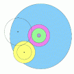

|
 |
|  |
 |
1. What is a differential gear?
First some definitions from Gear Engineering. An assembly of intermeshing gears is called a train. In a simple planetary train two coaxial gears are connected by one or more similar gears ("pinions," also called "planets" or "spider gears") mounted on intermediate shafts. Those shafts are fixed to a carrier, or "turntable".In all the diagrams in this column, the following color scheme has been followed: the two coaxial gears are purple and green, the pinions are yellow, the turntable is blue.
If all three of the principal parts (purple, green, blue) are free to rotate, the train is called a differential. In this column we will explore the functioning of differentials, and examine in particular the differential in the Antikythera mehanism.